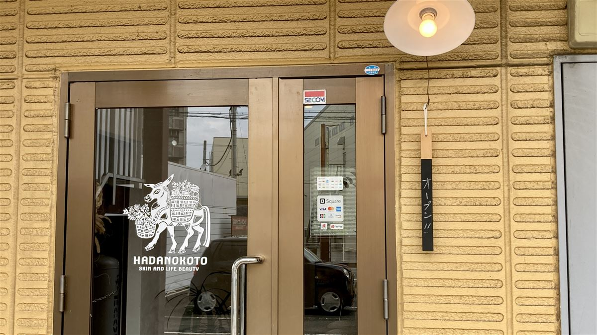

アクセス・ご予約

content 01 店舗情報
- 店舗名
- ハダノコトサロン
- 住所
- 〒839-0841 福岡県久留米市御井旗崎5-9-5 プレスト御井駅前104
Google mapを見る - 営業時間
- 10:00〜18:00（火・金は20:00まで予約対応）
- 定休日
- 水曜日（不定休あり）
- 駐車場
- あり
- ご予約方法
 公式LINEで予約
公式LINEで予約
お電話（0942-25-8946）でも承ります
JR御井駅から徒歩2分／久留米インターより車で3分。鳥栖・佐賀・日田方面からも通っていただけます。
ご予約・ご相談は公式LINEからが便利です。24時間受付、既読になり次第お返事します。
content 02 地図